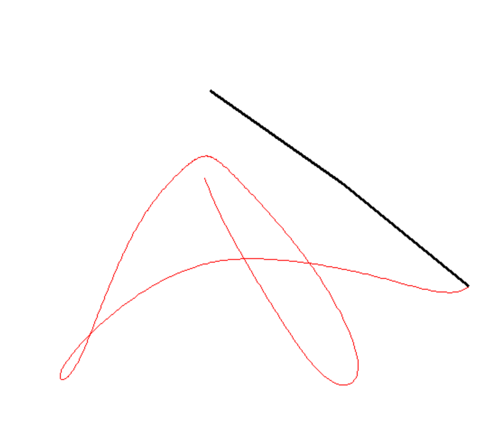
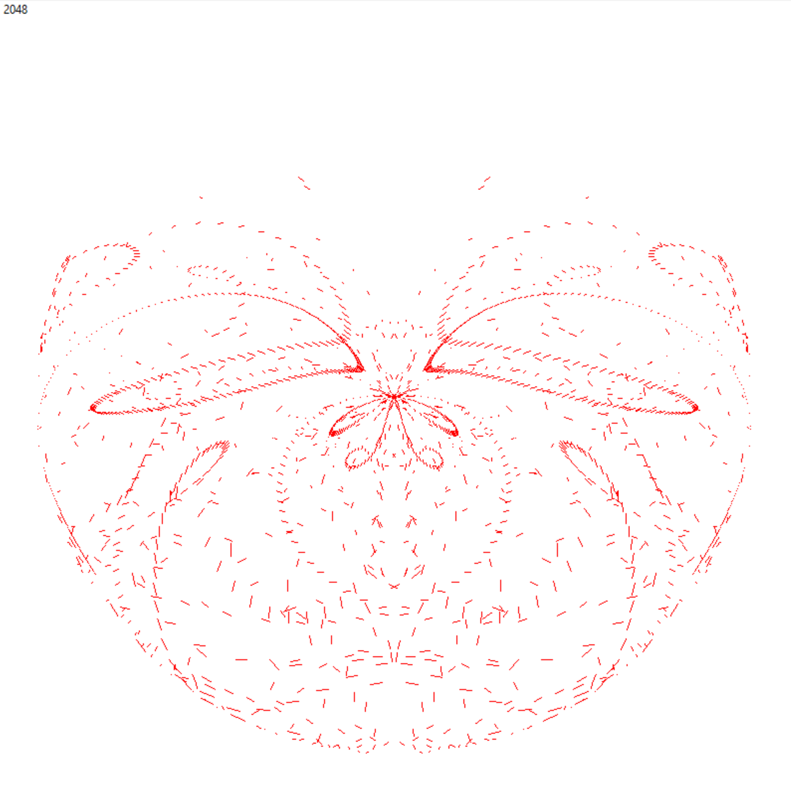

Pendulums
A double pendulum simulation implemented in Python, rendered in Tkinter with a trace of the path of the
end of the pendulum.
Additionally, a variation on this, where 2048 double pendulum systems are simulated
(with various inital conditions), and only their trails are rendered.
The source code for both is displayed here, and can also be found in my
GitHub
old-projects repository.

